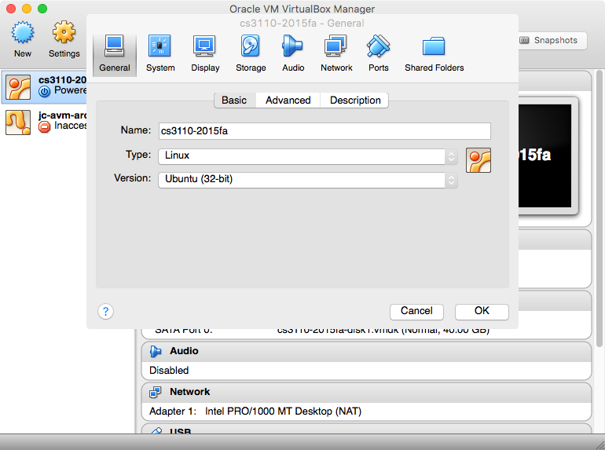
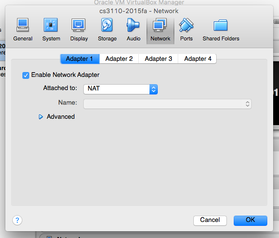
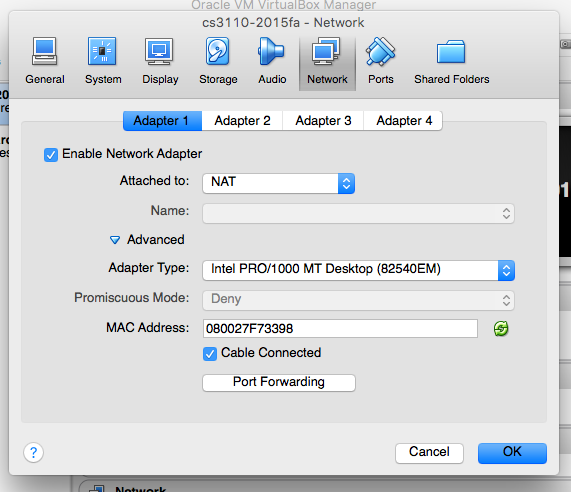
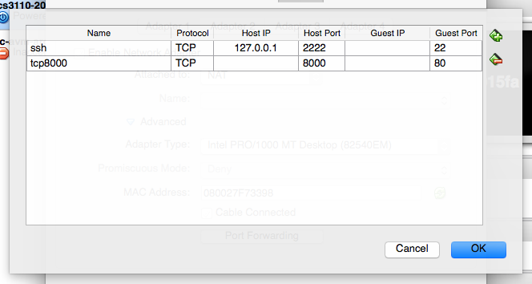
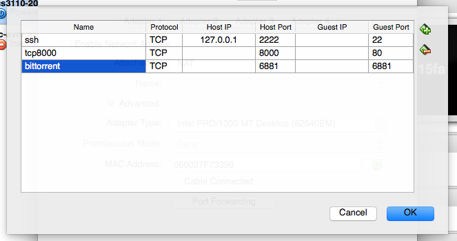

# A5: BitTorrent
**Soft deadline:** Thursday, 11/12, 11:59 pm
**Hard deadline:** Saturday, 11/14, 11:59 pm
*This assignment must be done with your project team. Sharing of code
is permitted only between you and your team; sharing among larger groups is
prohibited.*
* * *
**Project component:** As part of A5, you will do the design phase of
your project. See [Milestone 1 of the project description][ms1] for
instructions.
[ms1]: ../proj/proj.html#ms1
* * *
BitTorrent is a protocol for distributing large, popular
files. Instead of downloading files from a single,
centralized server, users of the BitTorrent protocol share
files with one another, thus distributing the work of
hosting a file among all of the users who are interested in
it. In this assignment, you will implement your own
BitTorrent application that is compatible with real-world
BitTorrent infrastructure.
## Overview
The BitTorrent protocol uses *peer-to-peer architecture*, a
variant of client–server architecture in which every
client can behave as a server to all other clients. Since
there is no essential distinction between client and server,
we henceforth write "peer" instead of "client" (though beware
that what we call a "peer" is often called a "client" in
the BitTorrent literature). Every participant in the
BitTorrent network runs a peer to upload and download files.
Suppose that I want to distribute a movie named `movie.mp4`:
* I would generate a *.torrent file* called `movie.mp4.torrent`.
(.torrent files are also called *metainfo files*). This file contains
metadata about the file to be distributed, such as the size, filename, and also
hashes that are used to verify the integrity of parts of the file.
* I would run a peer that has a complete copy of the file; such a peer
is called a *seeder*.
* I would also run a *tracker*, which is a separate program that tracks the
peers who are uploading and downloading the file.
Suppose that you want to obtain a copy of `movie.mp4`:
* You would obtain a copy of `movie.mp4.torrent`, perhaps by clicking
[here][torrent].
* You would then run a program called a *peer*. The peer reads
the .torrent file to learn the address of the tracker and
the metadata of the file to be downloaded.
* Your peer would connect to the tracker and send a message indicating
that it wants to participate in the distribution of the file. The
tracker replies with a list of other peers who are already participating.
* Your peer would then connect to the other peers and begin exchanging parts of
the file. Peers do not send entire files to one another; instead, the file
is broken up into small *blocks*, typically 16kb in length. Your peer would
request blocks that it does not yet have, and it would respond to requests from
other peers by sending the blocks that it does have.
* Your peer would continue this process until it recieved all of the blocks of the
file.
[torrent]: movie.mp4.torrent
At that point, you would have successfully downloaded the movie.
If you wanted to help your fellow students download
the movie faster, you would leave your peer running as a
seeder. Or you could terminate your peer and use your
bandwidth for other activities.
Some of the BitTorrent peer is already implemented for
you, including the code that handles networking. Your
task is to implement code that manages concurrent uploading
and downloading of files, as described in the rest of this
writeup.
**Warning:** (TODO: blink)
Because BitTorrent is an efficient protocol for downloading
large files, it is often used for illegally downloading
copyrighted material. Using your implementation to
illegally download copyrighted material will be considered a
violation of [Code of Academic Integrity][aicode] and/or the
[Cornell University Policy Regarding Abuse of Computers and
Network Systems][network-abuse]. Moreover, the Cornell
network administrators monitor BitTorrent traffic to detect
copyrighted material, and they may take punitive action
(such as terminating your internet connection) if they detect
you misusing your implementation. Before downloading a file,
check that you are legally allowed to do so.
[aicode]: http://cuinfo.cornell.edu/aic.cfm
[network-abuse]: http://www.it.cornell.edu/policies/university/privacy/abuse/index.cfm
## Objectives
* Write concurrent programs using futures.
* Gain experience working on a larger codebase.
* Practice teamwork skills.
## Recommended reading
* [Lectures and recitations 16–18][web]
* [RWO chapter 18][rwo18]
* [The BitTorrent protocol specification][btspec] (which contains more
detail than you need, but you might find it helpful and interesting)
[web]: http://www.cs.cornell.edu/Courses/cs3110/2015fa/
[rwo18]: https://realworldocaml.org/v1/en/html/concurrent-programming-with-async.html
[btspec]: http://www.bittorrent.org/beps/bep_0003.html
## Requirements
* You must implement `Peer`, `Session`, `DownloadManager`, and `UploadManager`,
which are interfaces described below in Parts (TODO: say what Part number(s) they're in
after that part of writeup stabilizes).
If you implement the required interfaces correctly, your solution will be compatible
with off-the-shelf BitTorrent trackers and peers. (Of course, your solution won't
implement many optional pieces and extensions to the BitTorrent protocol, but you
could do some of that for karma.)
* We must be able to compile and run your peer as described below under
"Compiling and running".
* Your code must be written with good style and be well documented.
* You must use Git (or another version control system) as part of your
development process.
**SUPER-IMPORTANT WARNING:**
You may not change the provided `.mli` files, not even to add new values or types.
We will be testing your solution by swapping in our own implementations of those
interfaces. If you were to change a `.mli`, our implementation wouldn't necessarily
conform to your new `.mli`, and your solution would be deemed a no-compile, hence
receive minimal credit. **Do not change the provided `.mli` files.**
## What we provide
* Many `.mli` and `.ml` files, which are described below under
Part 0. **Do not change the provided `.mli` files.**
* A template file `a5.txt` for submitting your written feedback.
* TODO: several .torrent files that can be used to download various files.
The release code is provided in a [GitHub repo][github-a5]. You can
download a ZIP of the code from that site ("Download ZIP" button on
the bottom right).
[github-a5]: https://github.com/cs3110/a5-2015fa
## What to turn in
Submit files with these names on [CMS][cms]:
* For BitTorrent:
- `a5src.zip`, containing your solution code.
**Do not change the provided `.mli` files.**
- `vclog.txt` containing your version control log.
- `a5.txt`, containing your written feedback.
* For Milestone 1 of your project:
- `design.pdf`, containing your design document.
- `interfaces.zip`, containing your interfaces.
[cms]: https://cms.csuglab.cornell.edu/
**To prepare `a5src.zip` for submission:**
From the directory that contains `main.ml` TODO (that file doesn't exist in A5),
bundle all your source code
and your test suite into a zip file with this command:
```
$ zip a5src.zip *.ml*
```
Do not include any compiled bytecode files, otherwise your submission
might become too big to upload.
Double check that you got all your files with this command:
```
$ zipinfo -1 a5src.zip
```
**To prepare `vclog.txt` for submission:** Run the following
command in the directory containing `main.ml` TODO (that file doesn't exist in A5):
```
$ git log --stat > vclog.txt
```
## Grading issues
* **Compiling and running:** Your peer must compile
according to the instructions given below in Part 0 under
"Compiling and running". **Do not change the provided `.mli` files.**
Solutions that do not obey these stipulations will receive minimal credit.
* **Code style:** Refer to the [CS 3110 style guide][style].
Ugly code that is functionally correct will nonetheless be penalized.
Take extra time to think and find elegant solutions.
* **Late submissions:** Carefully review the [course policies][syllabus] on
submission and late assignments. Verify before the deadline on CMS
that you have submitted the correct version.
* **Environment:** Your solution must function properly in the
[3110 virtual machine][vm], which is the official grading
environment for the course.
[style]: http://www.cs.cornell.edu/Courses/cs3110/2015fa/handouts/style.html
[syllabus]: http://www.cs.cornell.edu/Courses/cs3110/2015fa/syllabus.php
[vm]: http://www.cs.cornell.edu/Courses/cs3110/2015fa/vm.html
## Git
You are required to use [Git][git] (or another version
control system) whether you are working as an individual or
with a partner. Throughout your development of A5, commit
your changes to a repo. Use those checkins to provide
checkpoints, in case you need to restore your development to
a previous point. Synch with a remote repo to communicate
code between you and your partner, or simply to backup your
development if you are working as an individual. **Private
repos are of the utmost importance. A public repo would
share your code with the entire world, including your
classmates, thus violating the course policy on academic
integrity. Therefore we require that you keep all your CS
3110 related code in private repos.**
[git]: https://git-scm.com/
## Teamwork
At your first meeting, read the questions on teamwork in the provided `a5.txt`.
Since you'll need to answer them by the time you submit your solution, now would
be a good time to take a few minutes to talk about what you hope your answers will
be. You are especially encouraged to write down a short set of ground rules for
your team.
Here are two sample sets of ground rules that you might use as a starting
point for discussion:
* Everyone will participate and take ownership of our work.
* When appropriate, sub-teams will be assigned to work on specific activities.
* Team members will complete assignments on time.
* Meetings will start and end on time. No backtracking if someone is late.
* Each meeting will have a note taker (rotating task) who will distribute
notes and record decisions and assignments.
* Anyone who is absent from a meeting is responsible for finding out what they
missed.
* Everyone will respect the value of each individual's contribution.
* Resolution of differences will typically be by majority decision, but
on key issues the team will reach consensus.
(Source: [University of Minnesota Office of Human Resources][umhr])
[umhr]: http://www1.umn.edu/ohr/toolkit/workgroup/forming/rules/
* We all show equal commitment to our objective.
* We all take part in deciding how work should be allocated.
* We are committed to helping each other learn.
* We acknowledge good contributions from team members.
* We handle disagreements and conflicts constructively within the team.
* We are able to give constructive criticism to one another and to accept it ourselves.
* We all turn up to meetings and stay to the end.
* We are good at making sure that everyone knows what's going on.
* When one of us is under pressure, others offer to help him or her.
* We trust each other.
* We remain united even when we disagree.
* We support each other to outsiders.
* We feel comfortable and relaxed with one another.
(Source: [University of Waterloo Centre for Teaching Excellence][teamwork], citing
Levin and Kent (2001).)
[teamwork]: https://uwaterloo.ca/centre-for-teaching-excellence/teaching-resources/teaching-tips/tips-students/being-part-team/teamwork-skills-being-effective-group-member
## Part -1: Interact with real-world BitTorrent
Install BitTorrent in the VM by running
```
$ sudo apt-get install bittorrent
```
You can create a new .torrent file for a file named `my_file.xyz` by running
(TODO: change this so it doesn't use localhost)
```
$ btmakemetafile <filename> http://localhost:31100/announce --comment "torrent for testing"
```
This will output a file called `<filename>.torrent`, which you can pass as input
to your peer.
To start a tracker for the file, change to a directory containing the .torrent
file, and run
```
$ bttrack --dfile downloaders.log --port 31100
```
This will run a tracker, and will keep information about the downloaders in the
file `downloaders.log`. The port number should match the port number used in
the call to `btmakemetafile`. The tracker will track for all .torrent files in
the current directory. You can stop the tracker by typing Control-C.
To run a peer, run
```
$ btdownloadcurses <torrent file>
```
You will see various output, such as the file being downloaded, the upload and
download rates, and possibly error messages. You can exit the program by typing
`q`.
If the file to be downloaded already exists in the current directory,
btdownloadcurses will only download the missing pieces. It is a good idea to
run a peer that starts with the entire file, so that all of the other peers can
eventually download the whole thing.
**Exercise**: Make two directories called `seeder` and `downloader`. Put a
copy of `a5.zip` in the `seeder` directory. Use `btmakemetainfo` to create
`a5.zip.torrent`. Open several terminal windows. In one of them, change to
the `seeder` directory and run `bttrack` to start the tracker. In another,
change to the `seeder` directory and run `btdownloadcurses` to start a seeder.
In a third window, copy `a5.zip.torrent` (but not `a5.zip`!) into the
`downloader` directory. From the `downloader` directory, use
`btdownloadcurses` to download from the seeder. After the transfer is
complete, there will be a copy of `a5.zip` in the `downloader` directory. You
can try this experiment again with a third peer.
TODO: Between now and the due date of the assignment, we will provide a
tracker for the .torrent files included in the release. Note
that while using these torrents, you will probably be connecting
to peers implemented by your peers; and they might not be working
correctly yet. Interacting with buggy peers is part of the fun
and challenge of implementing network protocols.
TODO: **Exercise**: Use `btdownloadcurses` to download the (TODO: torrent file
that we provide)
## Part 0: Understand the provided codebase
Your preliminary task is to familiarize yourself with the
structure of the code we have shipped to you. This codebase is
larger than those we have provided in previous projects. We have
provided several complete modules that you can use to help you
interact with BitTorrent trackers and peers. We have also
provided interfaces for the modules you will implement.
We have provided interfaces and skeleton implementations of
the modules that you must implement:
- `Peer` manages a connection with a single remote peer.
- `Session` manages the connection with the tracker and maintains the set of
peer connections.
- `UploadManager` is responsible for choking and unchoking peers to maintain
a good upload rate.
- `DownloadManager` is responsible for sending requests for needed blocks
to peers that can provide them.
Every member of the group should familiarize themselves with
all of these interfaces. The `.ml` files for these modules
contain only skeleton implementations. They also contain
comments with advice on how to implement them.
We have also provided several helper modules that you can use in implementing
the above modules:
- `Protocol` contains types and functions for sending messages to and receiving
messages from peers and trackers.
- `Metainfo` contains types and functions for decoding .torrent files.
- `BlockSet` contains types and functions for reading and writing pieces of a file.
- `Bitfield` contains types and functions for keeping track of a set of boolean
values.
You should familiarize yourself with these interfaces, but
you do not need to examine the implementations. (You
are encouraged to peruse them if you are curious!)
Finally, there are a few modules that you will not interact with directly:
- `BExpr` handles encoding and decoding *bencoded expressions*, which are used
to encode .torrent files and some of the BitTorrent network messages.
- `FileSet` manages spreading data across several files.
- `SHA1` contains types and functions for working with SHA-1 hashes, which are
used to verify the correctness of the files downloaded by peers
- `Main` is used to run your BitTorrent client. It parses the command line
and calls the functions you have implemented to download the file.
You can safely ignore these modules entirely.
**Preparing the VM:**
The provided code relies on several third party libraries that are not installed
by default on the 3110 VM. You can install them using the following commands:
TODO: make sure this is complete
```
$ opam install cryptokit
$ opam install uri
```
As described in [recitation 18][rec18], you can install a patched version of `utop`
with better support for Async by running
```
$ opam pin add utop https://github.com/cs3110/utop.git
$ opam update utop
$ opam upgrade utop
```
[rec18]: http://www.cs.cornell.edu/Courses/cs3110/2015fa/18-monad/rec.html
By default, the 3110 VM is not able to receive connections from remote peers
over the network. Although you can test your code entirely on a single VM,
it's more fun to test it over the network. If you wish to test your code over
the network with other peers, you must alter the VirtualBox settings as
follows.
First, shut down your 3110 VM.
After that's completed, click on the "cs3110-2015fa" entry in the VMs list to select it.
Then, click the "Settings" button (with the orange gear) on the toolbar to open the settings window for the 3110 VM.

Now click the "Network" button at the top of the settings window to go to the network management tab.

Click the "Advanced" text to the right of the blue triangle to expand advanced settings.

Next, click the "Port Forwarding" button.
This should cause the port forwarding window to appear.

We're going to add a new entry to forward a common BitTorrent listening port, 6881, from the outside network to the 3110 VM.
You can choose a port other than 6881, but make a note of which port you choose: this is the port you must use if you want to test your implementation with our test torrent or implementations on your partners computer.
Click the button with the green plus sign to add a new row.
Fill in the row as follows:

And finally we're done! Click the "Ok" buttons to save your settings.
You can now start the VM again.
**Compiling and running:**
From the directory containing `main.ml`, run
```
$ cs3110 compile main.ml
```
to compile your BitTorrent peer. Then run it with the following command:
```
$ cs3110 run main.ml <filename.torrent>
```
where `<filename.torrent>` is the name of a .torrent file describing the
file you want to download/upload. This will either read or create the file
described by the torrent file, connect to the tracker described by the torrent
file, and start downloading and uploading parts of the file to other peers.
Note that `main.ml` is expected to run forever; even after the file is
successfully downloaded, it will continue to upload the file to other peers.
You can stop it at any time by typing Control-C.
TODO: each of the Parts below is a bunch of declarative text with no
imperative statements. I modified the Part heads to be imperative,
but (reading as a student) I still don't know exactly what I'm supposed to
**do** with the information I'm being given...
TODO: also, I don't understand whether there's a sequential order being
imposed here, or whether we want to suggest parallel development, and if
so, what can be parallelized.
## Part 1: Implement the Peer module
As mentioned in the overview, peers exchange messages
containing blocks of the file or requests for blocks of the
file. Peers also exchange messages informing other peers of
their own state. For example, peers exchange messages about
*pieces* of a file. A piece, typically of size 256kb,
512kb, or 1mb, is a collection of blocks. When your peer
has finished receiving a piece, it will inform the other
peers. Those peers will then know that they can requests
blocks of that piece from your peer. Peers also inform each
other of whether they are *interested* in downloading from
each other. Your peer is interested in downloading from
another peer if you know that the other peer has a piece
that you need.
Because peers have limited upload bandwidth, they typically only want to allow
a small number of remote peers to download blocks from them. If peer A is
refusing to send blocks to peer B, we say that A has *choked* B. Peer A will
inform peer B when it decides to choke or unchoke B. B should refrain from
sending requests to A if it is choked, and if A receives a request from B while
B is choked, A should ignore the request.
The `Peer` module is responsible for sending and receiving all messages from
peers. A `Peer.t` encapsulates a connection to a single peer; the `Peer`
interface contains functions for finding out whether the remote peer choking
the local peer, whether the remote peer is interested in the local peer, and
so on. It also contains functions for choking and unchoking the remote peer,
and for requesting data from the remote peer.
The Peer module uses the observer pattern as described in [recitation 18][rec18].
This pattern enables other parts of the system to react when a peer becomes choked or
unchoked, or its state otherwise changes.
The file `peer.ml` contains more details on how to send and receive messages
from peers, and the circumstances under which the various types of messages
should be sent. (TODO: this paragraph feels disconnected)
TODO: They are not implementing Session.
## Part 2: Implement the Session module
At any point in time, a peer is connected to some number of remote peers.
The set of remote peers can change for several reasons. While running, your
peer should periodically request an updated peer list from the tracker; upon
receiving an updated list, your peer may create new connections to new remote
peers. In addition, remote peers can initiate connections to your peer; this
would also cause the set of remote peers to grow.
On the other hand, remote peers can disconnect or send misformed messages. In
this case, the peer should be removed from the set of active connections.
The `Session` module is responsible for communicating with the tracker,
handling incoming connections from other peers, and maintaining the list of
active peers. It provides functions for querying the set of active peers, and
for being notified when the set of peers changes.
The `session.ml` file contains more details on how to communicate with the
tracker.
## Part 3: Implement the DownloadManager module
At any point in time, your peer will have some subset of the blocks of the file,
and will need to download the rest. Moreover, your peer will be connected to
several remote peers, some of which can provide you with a block (because they
have the block and are not choking you), and many of which can't.
You typically cannot attempt to download the entire file at the same time,
because you usually need a large number of blocks but are only connected to a
small number of peers. The best the peer can do is to ensure that it is
constantly fetching blocks that it needs from all of the available peers.
The `DownloadManager` module is responsible for matching the blocks that need
to be downloaded with the peers who can provide them. It needs to react when
the state of a remote peer changes (for example if the remote peer chokes your
peer, or if the remote peer receives a new block that you need).
The file `downloadManager.ml` contains more details on how blocks and remote
peers should be matched, as well as some implementation advice.
## Part 4: Implement the UploadManager module
As mentioned above, your peer has limited upload bandwidth, and should only
allow a small number of peers to download blocks at any given time. The
`UploadManager` module is responsible for deciding which peers to choke and
which to unchoke. It should then call `Peer.choke` and `Peer.unchoke` on those
peers.
There are various algorithms for deciding which peers to choke and for deciding
when to change the set of choked peers. These algorithms are discussed in more
detail in the file `uploadManager.ml`.
## Karma
Because we will be substituting our own implementations of
modules for yours during testing, **do not change the
provided `.mli` files.** If in doubt, please ask!
<img src="camel_orange.png" height="40" width="40">
TODO